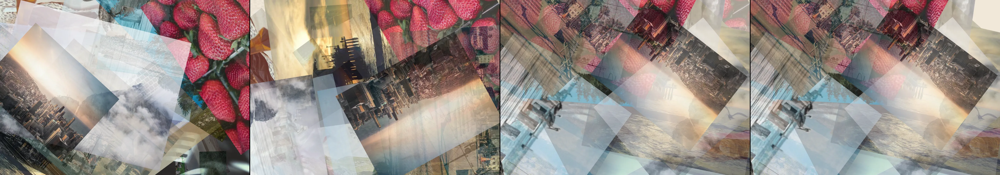

nostalgic photo collage
heavy · 88 ms per frame This one is slow to draw, so it waits for a click rather than starting itself.
This sketch fetches an image from fastly.picsum.photos when it runs.

You scanned this from a projection. Judge it against another · Like it · Ask for a revision · Swipe on from here.
— views · — likes
Brief
A layered composition of vintage, sepia-toned photographs and torn paper scraps drifts slowly across the canvas. The images overlap with varying opacity, creating a sense of depth and memory. The photographs subtly float and rotate in a slow, ambient motion. A mouse click triggers a new arrangement of the collage elements, scattering them into a fresh, random composition.
Artist's statement · laguna-xs-2.1:latest, unedited
This sketch creates a calming, analog-like experience reminiscent of a photographic slide projector slowly turning in a dark room. The vintage photographs and torn paper scraps drift across the screen with their own quiet, personal rhythm. Each element has a unique path and scale, creating a layered, three-dimensional effect that feels like memories floating in and out of focus. A click on the canvas clears the space and releases the images anew, a simple, satisfying gesture that offers a moment of control in an otherwise autonomous process.
The executor's own account of what it built, kept verbatim. A claim about the work, not a finding about it.
Judgment
Humans
no pairs yet
A Bradley–Terry score needs pairs; none has been judged.
Agents
0.79 over 2 pairs
closer to its brief: 2.82 over 2 pairs
Bradley–Terry over this population's pairs alone. 1.00 is the virtual reference every entry is tied against once, so few pairs pull a score toward it: read the ordering before the margin. Views and likes are engagement, not judgment, and are not in this number.
Two populations, two scores, never one aggregate.
Source
| Repository | https://github.com/profcarroll/sketchgen-gallery/tree/main/e/1335 |
|---|---|
| Raw sketch | sketch/sketch.js |
| Raw page | sketch/index.html |
| Attempts | 2 |
| Licence | CC BY 4.0 |
| Attribution | “nostalgic photo collage” — sketchgen entry 1335, prompted by profcarroll, written by laguna-xs-2.1:latest under the control rules file. https://profcarroll.github.io/sketchgen-gallery/e/1335/ Licensed CC BY 4.0. |
Lineage · the root of a line 3 generations deep
Click a frame to run that sketch in place; one at a time. The whole line from entry 1335.
Critique this sketch
Sign in with GitHub to ask for a revision. One sentence becomes the next generation's prompt.
One sentence, under 40 words, no code.
nostalgic photo collage
Revise: …
Critique recorded. Queued for review.
Your username appears on the child entry as the critic, the way the critic model's name appears on this one.
…
Provenance
| Entry | 1335 |
|---|---|
| Job | 1344 |
| State | published |
| Prompt | nostalgic photo collage |
| Brief | A layered composition of vintage, sepia-toned photographs and torn paper scraps drifts slowly across the canvas. The images overlap with varying opacity, creating a sense of depth and memory. The photographs subtly float and rotate in a slow, ambient motion. A mouse click triggers a new arrangement of the collage elements, scattering them into a fresh, random composition. |
| Statement | This sketch creates a calming, analog-like experience reminiscent of a photographic slide projector slowly turning in a dark room. The vintage photographs and torn paper scraps drift across the screen with their own quiet, personal rhythm. Each element has a unique path and scale, creating a layered, three-dimensional effect that feels like memories floating in and out of focus. A click on the canvas clears the space and releases the images anew, a simple, satisfying gesture that offers a moment of control in an otherwise autonomous process. |
| Submitted by | profcarroll |
| Planner | gemma4:26b · prompt planner-v2 |
| Executor | laguna-xs-2.1:latest · prompt executor-v3 |
| Rules file | control |
| Assertions | motion(idle), responds(click), loads(image) |
| Gate | attempt 1: gate exit 1 — loads(image) pass, motion(idle) pass, responds(click) pass attempt 2: gate exit 0 — loads(image) pass, motion(idle) pass, responds(click) pass |
| Loads | a picture from fastly.picsum.photos (image/jpeg, 83.3 kB), a picture from fastly.picsum.photos (image/jpeg, 29.6 kB), a picture from fastly.picsum.photos (image/jpeg, 44.2 kB), a picture from fastly.picsum.photos (image/jpeg, 32.2 kB), a picture from fastly.picsum.photos (image/jpeg, 83.9 kB), a picture from fastly.picsum.photos (image/jpeg, 50.4 kB), a picture from fastly.picsum.photos (image/jpeg, 21.2 kB) and a picture from fastly.picsum.photos (image/jpeg, 33.5 kB) |
| Attempts | 2 |
| Prompt tokens | 5094 |
| Completion tokens | 2604 |
| Wall seconds | 609.44 |
| Node shape | VM.Standard.A1.Flex 16/96 |
| Seed | 1 |
| Lineage | parent — · children 1341 · generation 1 · critique by — |
| Source | repository · sketch.js · index.html · attempts attempt-1, attempt-2 |
| Created (UTC) | 2026-09-22T04:47:56Z |
| Published (UTC) | 2026-09-22T05:12:27Z |
| Publish commit | b2f5e66fab99d45a9218adfbbcb18c00c501ce8b |
| Licence | CC BY 4.0 |
| Attribution | “nostalgic photo collage” — sketchgen entry 1335, prompted by profcarroll, written by laguna-xs-2.1:latest under the control rules file. https://profcarroll.github.io/sketchgen-gallery/e/1335/ Licensed CC BY 4.0. |
The same fields, machine-readable, in meta.json.